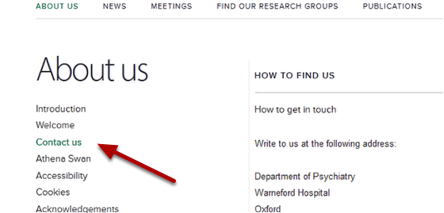

By default the link name for a page on the lefthand navigation is the same as the title of the page. You might want to change this - for example if the page title is quite long.
In this example we will change the link on the left hand navigation from How to find us to Contact us.
Go to the page where you would like to change the name of the navigation. Click on Edit on the top tool bar.
Enter the new name into the Short title box.
Scroll down to the bottom of the page and click on the Save button
You will now see that the name of the page in the lefthand navigation has changed to Contact us.